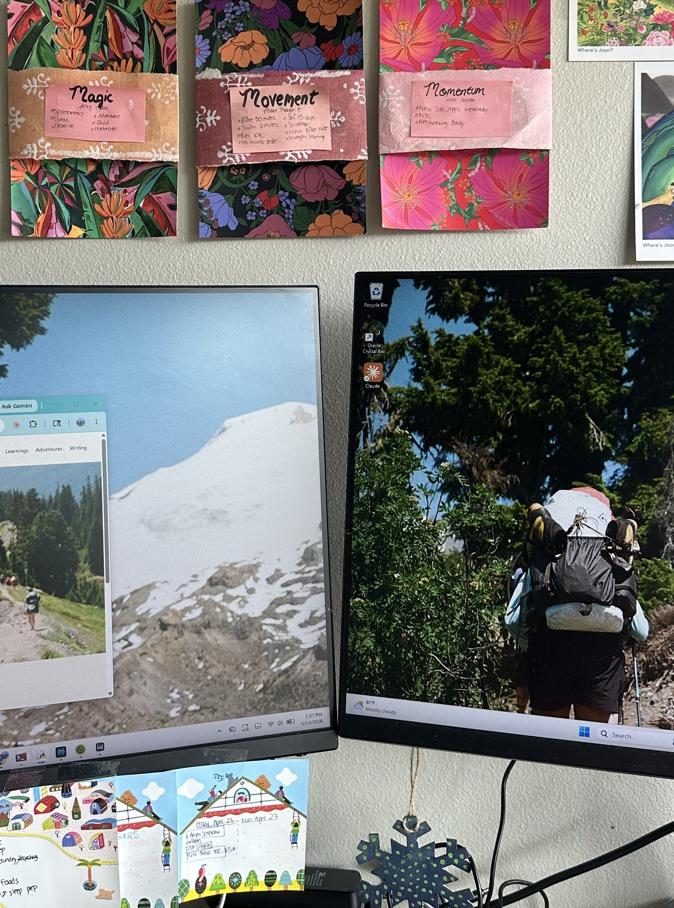
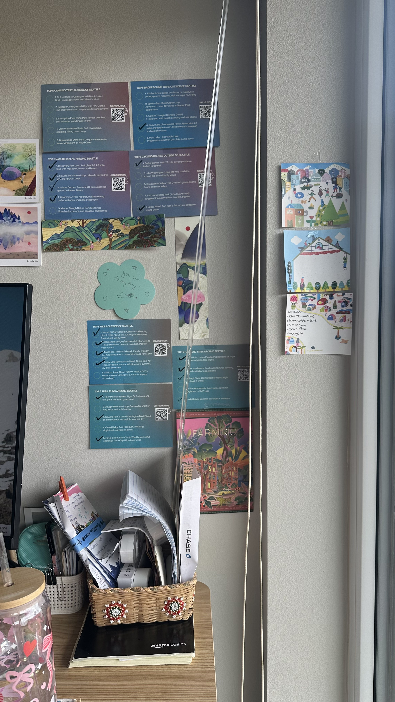
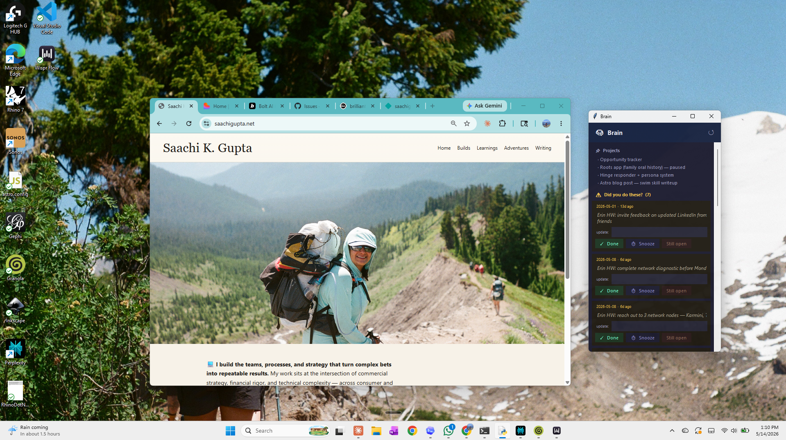
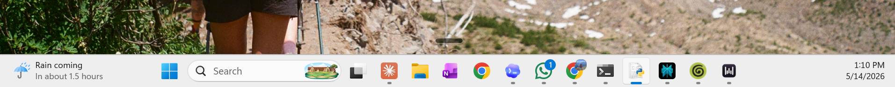
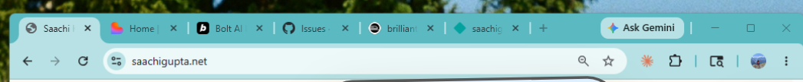

screen14. Baker climbing background: a reminder that hard things are doable.
web15. Personal website.
brain16. Claude Code Brain.
Current MoodTender command center
Daily DriverChatGPT, Claude, PowerPoint
Always OpenGmail, LinkedIn, OneNote
Stack ThesisIdea -> structure -> artifact -> system -> story
Read the desk
The room works like a stack trace. Each visible layer says something about how the work gets made, where the energy comes from, and what refuses to stay purely digital.

MagicMovementMomentum
1Joined the party: always
Magic / Movement / Momentum
Three handmade cards on floral wrapping paper. Each one has a sticky note inside with what it currently means. This is the analog operating system: not a productivity app, just three words that keep the screen from becoming the whole world.
Left monitor: the website. Right monitor: a hiker on a ridge with a full pack, mountain wallpaper. The outdoor brain running in the background while the work brain deals with tabs, decks, and follow-ups.
A handwritten 2026 adventure tracker with activities crossed off. A "30!" countdown. The "Figuring Out AI Together / Microadventures Await" bag. A framed Instax strip of trips from Mont Blanc to NYC to Auvergne. Life context for the work happening in front of it.

printed by Claudecheckmarks = actually doneyou can do anything
4Joined the party: Mar 2026
The AI receipts wall
Top 5 lists for hikes, backpacking, camping, cycling, trail runs, nature walks, and paddling around Seattle — generated by Claude, printed, taped to the wall, and checked off as they happen. AI output that left the screen and became something you live against.
The annotated desktop
A real setup photo plus a close annotated view makes the stack feel physical: a desktop screenshot, a wall collage, and a personal inventory all at once.
The AI stack is only one layer. The better story is the whole working surface: ChatGPT as chief of staff, Claude Code as builder identity, PowerPoint and HTML slides as artifact machines, Perplexity as research acceleration, Astro/Netlify/GitHub as owned surface area, scripts and APIs as tiny infrastructure, and analog reminders keeping the machine human.
The physical desk turns into the digital surface: Baker as the background, the personal website in front, and Claude Code Brain keeping the work loop visible.

14. Baker background15. personal website16. Claude Code Brain
Digital read
14The desktop background is Baker, a reminder that hard things are doable.
15The personal website is the owned surface: the place where the work becomes legible.
16Claude Code Brain keeps projects, reminders, and open loops close to the work.
The toolbar
The horizontal toolbar is the practical layer: search, pinned tools, active AI/work apps, and the clock all in one strip.

ClaudeOrange logo. Still the tool I reach for most because Claude Code has been the main building surface.
CodexBlue/purple cloud. Still figuring out how to use it because I have been deeper in Claude Code.
Command lineBlack rectangle with the greater-than symbol. Super useful for multitasking.
/brainWhite icon. My custom to-do checklist skill for keeping open loops visible.
PerplexityBlack and turquoise. I still do not totally know what to do with it yet.
GranolaGreen spiral. Helpful for meetings and webinars.
Wispr FlowBlack and white. I am obsessed with it.
The website tab stack
The Chrome tabs are the working stack for the website: the live site, build tools, issue tracking, references, and AI helpers all open in one narrow row.

SiteThe live Saachi tab anchors the work: the public surface is always in view.
BuildHome, Bolt AI, and adjacent build tabs hold the making layer.
IssuesGitHub issues keep the site work concrete and trackable.
RailwayThe backend/deploy tab for anything that needs more than a static site.
NetlifyThe deploy and preview tab for turning the repo into the live site.
Top 8
The eight tools and rituals that show up most clearly: thinking, building, artifact-making, research, owned web presence, prototypes, automation, and human coordination.
brain.md / logs / CRMs / LinkedIn / WhatsAppTasks, leads, runbooks, outreach, touchpoints, and human coordination.
operating ritual
The stack, actually
Saachi's desk is not trying to look minimal. It is trying to hold momentum. The same thing is happening in the tech stack.
On paper, it includes ChatGPT, Claude, PowerPoint, Perplexity, Astro, GitHub, Netlify, Python scripts, APIs, logs, and a growing set of personal files. In practice, it is not a conventional software stack. It is a way of moving through work.
Saachi uses AI to get from the messy beginning to the thing she can actually show someone. A thought becomes a prompt. A prompt becomes a structure. The structure becomes a deck, page, app, email, dashboard, event concept, or system.
The stack is not just "I use ChatGPT." It is idea -> structure -> artifact -> system -> story.
The desktop is not a productivity setup. It is a self-portrait of someone learning how to turn thought into form.
The written profile
ChatGPT is the chief of staff: the place where messy notes become outlines, anxious emails become reasonable emails, interview stories get pressure-tested, and vague ideas become clear enough to act on.
Claude and Claude Code are the studio: where the identity shifts from prompting to building, and where website work, workflow automation, creative projects, job-search systems, code, files, and small tools become tangible.
PowerPoint is the final-form machine: AI can draft the structure, talk track, screenshots, charts, and story, but PowerPoint is where the artifact has to become presentable enough to send.
Around that core is the rest of the system: Perplexity and NotebookLM for research acceleration, Astro/GitHub/Netlify for owned web presence, Bolt and Lovable for fast prototypes, and Python scripts, hooks, APIs, logs, and loop files for tiny personal infrastructure.
Messy notes -> usable structure
ChatGPT as chief of staff: messy notes becoming structure.
Files, scaffolds, and working sessions
Claude Code as builder identity: files, code, scaffolds, and working sessions.
Drafted idea -> presentable artifact
PowerPoint as final-form machine: generated ideas turned into presentable artifacts.
Leads, follow-ups, statuses, review loops
The custom job dashboard: emotionally messy work made visible and reviewable.
Stories behind the stack
Adventure identifier
Comes from the Gearhouse bucket list of outdoor activities: a fuzzy appetite for adventure turned into something searchable, sortable, and doable.
Job dashboard
Came from needing an emotionally charged process to become visible: leads, follow-ups, recruiter threads, statuses, and avoidance turned into a surface.
/ss screenshot skill
Exists because sometimes the fastest way to explain a problem is to show the screen. Less prompt theater, more evidence.
Slop cannon
Accepts the real first draft: brain dumps, photo dumps, pasted notes, screenshots, and half-thoughts. Mess first, structure second.
Adoption timeline
Feb-Mar
Skill foundations. Interview coach matures, jobs dashboard launches, Gmail scan appears, and /availability, /text-respond, and /swim become the first custom skills.
Apr 1-14
Dashboard matures./updates, Interviews tab, Pipeline Gantt, dedup agent, coach sync agent, Bearer auth, mobile ingest, and /brain turn the dashboard into a living operating surface.
Apr 17-30
Agentic work and accountability. Resolve QBR iterations, critique agent, compensation negotiation skill, accountability system, scheduled logging, and floating TODO widget.
May 1-8
Systems layer forming. Email scraping, unemployment process docs, /ss, /log-job-search, and WA Log tab connect AI sessions to the external dashboard.
May 9
Level 5 moment.sync-dashboard.py, Stop hook, /ai-log, learning log, and memory system make the stack sync, remember, and track itself.
Who I learn from
Hannah Zhang
Context files, rules, skills, and the idea that better AI output comes from reusable personal context.
Career Hannah
Formats that write themselves: repeatable hooks, reusable templates, specific audience, and career content with a strong frame.
Allie Miller
AI fluency as a public operating style: show the workflow, explain the leverage, and make AI usage itself legible.
Lenny interview coach
Interview prep as a repeatable system: map competencies, pressure-test stories, sharpen examples, and rehearse the arc.
Glossier Top Shelf
Intimate inventory: what you reach for daily, what you swear by, what is embarrassing, what quietly works.
Toy Stories
Person plus objects as self-portrait, translated into desktops, tabs, tools, prompts, and rituals.
Myspace Top 8
Ranking as identity: current moods, badges, dependencies, and digital personality as interface.
Vibe coding builders
Permission to make scrappy things fast, then polish after the idea has a body.
Copy the workflow, not the personality. Copy the structure, then make the surface area yours.
The prompt under the pillow
"Turn this brain dump into a structure I can keep building on." The repeated move is idea -> structure -> artifact -> system -> story, then manual polish until it feels like Saachi.
Monthly allowance
The paid stack is not infinite, which changes the behavior. Because usage is metered or capped, Saachi is incentivized to optimize: use the right tool for the right job, keep context reusable, and turn expensive sessions into reusable systems.
The human part
The visible desk says the human part is taste, momentum, and meaning-making: choosing what gets pinned to the wall, what stays handwritten, what becomes a system, and what remains a little messy because it is still alive.